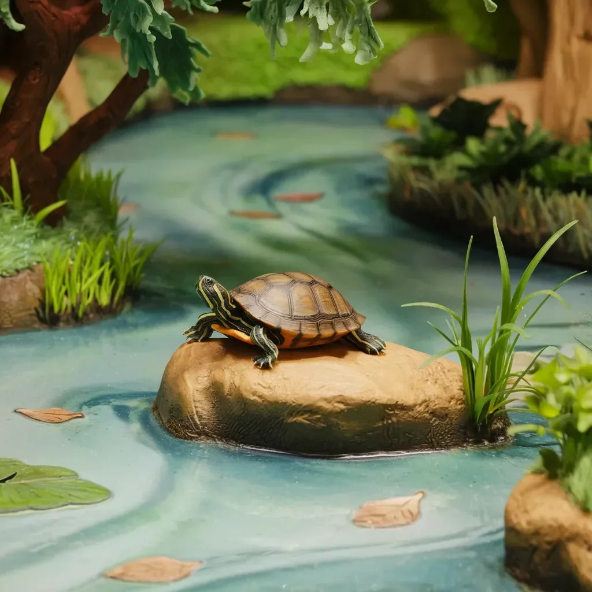

셸던은 여기가 어딘지도 모르는 채로 이곳에 오게 될 줄은 몰랐습니다. 한 순간 그는 개울가의 따뜻한 바위 위에서 일광욕을 즐기고 있었는데, 다음 순간 그는 굉음을 내며 떨어지는 폭포를 따라 엉덩이를 공중으로 들어 올린 채 구르고 있었고, 그의 등껍질은 마치 미친 핀볼 기계처럼 바위에 부딪히고 있었습니다.
[Sheldon hadn’t meant to end up here, wherever here was. One minute he’d been sunning himself on a warm rock by the creek, the next he was tumbling ass-over-teakettle down a roaring waterfall, his shell bouncing off boulders like some demented pinball machine.]
이제 그는 축축한 벽에 달라붙은 인광성 버섯에서 나오는 기묘한 푸른 빛으로 밝혀진 거대한 지하 동굴로 보이는 곳에 있었습니다. 그의 왼쪽 앞다리가 심하게 욱신거렸고, 아침에는 분명 없었던 균열이 등껍질을 따라 나 있었습니다.
[Now he found himself in what appeared to be a vast underground cavern, lit by an eerie blue glow emanating from phosphorescent fungi clinging to the damp walls. His left front leg throbbed something fierce, and a crack ran down his carapace that definitely hadn’t been there this morning.]
“아, 이거 참 좋구만,” 셸던은 혼잣말로 중얼거렸고, 그의 목소리는 동굴 벽에 메아리쳐 마치 불평하는 거북이들의 합창단처럼 들렸습니다.
[“Well, ain’t this just peachy,” Sheldon muttered to himself, his voice echoing off the cavern walls in a way that made him sound like a whole chorus of grumpy turtles.]
그는 언제나 자신이 분별 있는 거북이라고 자부해 왔습니다. 어리석은 토끼처럼 모험을 쫓아다니지 않는 그런 종류의 거북이 말이죠. 하지만 여기 그가 있었습니다, 지구의 심장부에서 길을 잃고, 아늑한 개울로 돌아갈 방법을 전혀 모른 채로 말이죠.
[He’d always prided himself on being a sensible sort of turtle. The kind who knew better than to go chasing after adventure like some fool hare. But here he was, lost in the bowels of the earth, with nary a clue how to get back to his cozy creek.]
어둠 속에서 들려오는 바스락거리는 소리에 셸던은 ‘거북이 수프'라고 말할 새도 없이 빠르게 머리를 등껍질 안으로 집어넣었습니다. 조심스럽게 밖을 내다보니, 그의 몸 전체만큼이나 긴 야광 지네들이 행렬을 이루며 지나가고 있었습니다.
[A skittering sound from the darkness made Sheldon pull his head into his shell faster than you could say “turtle soup.” He peeked out cautiously, only to see a parade of what looked like glow-in-the-dark centipedes marching past, each easily as long as his entire body.]
“혹시 신사분들 중 누구라도 출구가 어디 있는지 알려주실 수 있을까요?” 셸던이 외쳤지만, 선두 지네가 더듬이 달린 머리를 그의 방향으로 돌리는 것을 보고 곧바로 입을 열었던 것을 후회했습니다.
[“I don’t suppose any of you fine gentlemen could point me towards the exit?” Sheldon called out, immediately regretting opening his big mouth as the lead centipede swiveled its antenna-laden head in his direction]
“신선한 고기군,” 지네가 불길하게 아래턱을 딱딱 부딪치며 속삭였습니다.
[“Fresh meat,” it chittered, mandibles clicking ominously.]
“아, 상추님 맙소사,” 셸던은 자신의 모험이 이제 막 시작되었다는 것을 깨닫고 신음했습니다.
[“Oh, for the love of lettuce,” Sheldon groaned, realizing his adventure was only just beginning.]
셸던의 짧은 다리가 전진하는 지네 군단에서 벗어나려 필사적으로 움직였고, 그의 금이 간 등껍질은 매 움직임마다 동굴 바닥에 긁히며 소리를 냈습니다. 그 소리는 벽에 메아리쳐 그의 곤경을 상기시키는 타악기 소리가 되었습니다.
[Sheldon’s stubby legs pumped furiously as he scuttled away from the advancing centipede army, his cracked shell scraping against the cavern floor with each frantic movement. The sound echoed off the walls, a percussive reminder of his predicament.]
“난 이런 말도 안 되는 일을 겪기엔 너무 늙었어,” 그가 숨을 헐떡이며 모퉁이를 돌았는데, 곧바로 깎아지른 듯한 바위 벽과 마주쳤습니다. “오, 제기랄!”
[“I’m too old for this nonsense,” he wheezed, rounding a corner and finding himself face-to-face with a sheer rock wall. “Oh, shell and damnation!”]
선두 지네, 아마도 셸던을 반으로 자를 수 있을 것 같은 집게를 가진 괴물 같은 녀석이 모퉁이를 돌았습니다. 그것이 다가오면서 수많은 다리가 불안하게 물결치듯 움직였습니다.
[The lead centipede, a monstrous thing with pincers that could probably snap Sheldon in half, rounded the corner. Its multitude of legs rippled in an unsettling wave as it approached.]
“자, 자,” 셸던이 벽에 등을 기대며 더듬거렸습니다. “우리가 문명화된 절지동물처럼 이것에 대해 의논할 수 있지 않을까요?”
[“Now, now,” Sheldon stammered, backing up against the wall. “Surely we can discuss this like civilized arthropods?”]
지네의 대답은 의심스럽게도 웃음소리처럼 들리는 쉭쉭거림이었습니다.
[The centipede’s response was a hiss that sounded suspiciously like laughter.]
셸던이 자신의 마지막 순간을 전채요리로 보내게 될 수치스러움을 생각하고 있을 때, 그의 뒤에 있던 바위 벽이 무너졌습니다. 그는 비명을 지르며 뒤로 넘어졌고, 숨겨진 통로를 통해 미끄러운 구불구불한 터널을 따라 미끄러져 내려갔습니다.
[Just as Sheldon was contemplating the indignity of spending his final moments as an hors d'oeuvre, the rock wall behind him gave way. He tumbled backward with a yelp, falling through a hidden passage and sliding down a slick, winding tunnel.]
세상이 인광성 줄무늬와 귓가를 스치는 바람 소리의 흐릿한 모습으로 변했습니다. 셸던의 위장이 뒤틀렸고, 그는 터널 벽에 핑퐁공처럼 부딪혔으며, 그의 등껍질은 매 충격마다 새로운 긁힘과 찌그러짐을 얻었습니다.
[The world became a blur of phosphorescent streaks and the whoosh of air past his ears. Sheldon’s stomach lurched as he ping-ponged off the tunnel walls, his shell collecting new scrapes and dents with each impact.]
“취소할게요!” 그는 듣고 있을지도 모르는 우주의 힘에게 소리쳤습니다. “모험 같은 거 원하지 않아요! 내 바위가 좋아요! 내 개울이 좋다고요!”
[“I take it back!” he shouted to whatever cosmic force might be listening. “I don’t want an adventure! I want my rock! I want my creek!”]
터널이 갑자기 끝나면서 셸던을 공중으로 내뱉었습니다. 잠깐 동안 무서운 순간, 그는 공중에 떠 있었고, 짧은 팔다리를 무용하게 휘저었습니다.
[The tunnel abruptly ended, spitting Sheldon out into open air. For a brief, terrifying moment, he was airborne, flailing his stubby limbs uselessly.]
그리고 나서 그는 너무나 충격적이지 않았다면 우스꽝스러웠을 첨벙거리는 소리와 함께 물속으로 빠졌습니다. 셸던은 말 그대로 돌처럼 가라앉았다가, 자연적인 부력이 작용하여 수면으로 떠올랐습니다.
[Then he plunged into water with a splash that would have been comical if it weren’t so jarring. Sheldon sank like, well, a rock, before his natural buoyancy kicked in and he bobbed to the surface.]
눈에서 물을 깜빡이며, 그는 자신이 모든 방향으로 눈에 보이는 한 멀리 뻗어있는 지하 호수에 있다는 것을 알았습니다. 동굴 천장은 높이 아치형으로 솟아있었고, 내부에서 빛나는 종유석들이 점점이 박혀 있었습니다.
[Blinking water from his eyes, he found himself in an underground lake that stretched as far as he could see in every direction. The cavern ceiling arched high above, dotted with stalactites that glowed with an inner light.]
“음,” 셸던은 물을 헤엄치며 중얼거렸습니다, “불 속에서 빠져나와 아주 크고 깊은 물웅덩이로 빠졌군.”
[“Well,” Sheldon muttered, treading water, “out of the frying pan and into the… very large, very deep puddle.”]
근처 물에 일렁임이 생겨 그를 얼어붙게 만들었습니다. 수면 아래에서 무언가가 움직이고 있었고, 그것은 큰 것이었습니다.
[A ripple in the water nearby made him freeze. Something was moving beneath the surface, something big.]
“아, 제발,” 셸던이 신음했습니다. “이번엔 또 뭐야?”
[“Oh, come on,” Sheldon groaned. “What now?”]
물의 일렁임이 점점 커져갔고, 동심원이 세상에서 가장 불길한 과녁처럼 바깥으로 퍼져나갔습니다. 셸던은 뒤로 헤엄쳤고, 그의 짧은 다리는 잔잔한 물살을 거슬러 평소보다 더 열심히 움직였습니다.
[The ripple in the water grew larger, concentric circles expanding outward like the world’s most ominous bull’s-eye. Sheldon paddled backwards, his stubby legs working overtime against the gentle current.]
“안녕하세요?” 그가 떨리는 목소리로 외쳤습니다. “혹시 아주 크고 아주 친절한 물고기일 가능성은 없나요?”
[“Hello?” he called out, his voice wavering. “Any chance you’re just a very large, very friendly fish?”]
마치 대답이라도 하듯이, 거대한 형체가 수면을 뚫고 나왔습니다. 저녁 접시만한 크기의 비늘에서 물이 흘러내렸고, 동굴의 신비로운 빛 아래에서 무지개빛으로 빛났습니다. 소형차 크기의 머리가 깊은 곳에서 솟아올랐고, 그 뒤로 끝없이 이어지는 것 같은 구불구불한 목이 따라 나왔습니다.
[As if in answer, a massive shape breached the surface. Water cascaded off scales the size of dinner plates, iridescent in the cavern’s ethereal light. A head the size of a compact car rose from the depths, followed by a sinuous neck that seemed to go on forever.]
셸던의 턱이 떨어졌습니다. “이런, 정말 놀랍군,” 그가 중얼거렸습니다. “진짜 플레시오사우루스잖아.”
[Sheldon’s jaw dropped. “Well, I’ll be a monkey’s uncle,” he muttered. “A bonafide plesiosaur.”]
셸던 자신만큼이나 큰 생물의 눈이 작은 거북이에게 초점을 맞췄습니다. 그것의 입이 열리며 캔 따개로 사용해도 될 만큼 날카로워 보이는 이빨 줄이 드러났습니다.
[The creature’s eyes, each as big as Sheldon himself, focused on the tiny turtle. Its mouth opened, revealing rows of teeth that looked sharp enough to use as can openers.]
“자, 잠깐만요,” 셸던이 목소리에서 공포를 감추려 노력하며 말했습니다. “저는 당신 크기에 비하면 간식거리도 안 돼요. 아마 맛도 형편없을 거예요. 껍데기와 연골뿐이라고요, 아시겠죠.”
[“Now, hold on just a minute,” Sheldon said, trying to keep the panic out of his voice. “I’m not even a snack for something your size. Probably taste terrible, too. All shell and gristle, you know.”]
플레시오사우루스는 고개를 기울이며 호기심 어린 듯한 표정으로 셸던을 바라보았습니다. 그리고 거북이의 완전한 놀라움 속에서, 그것이 말을 했습니다.
[The plesiosaur tilted its head, regarding Sheldon with what seemed like curiosity. Then, to the turtle’s utter astonishment, it spoke.]
“너는… 물고기가 아니구나,” 그것이 말했고, 그 목소리는 셸던의 뼈 속까지 느껴지는 낮은 베이스음이었습니다.
[“You are… not fish,” it said, its voice a rumbling bass that Sheldon felt in his very bones.]
“네, 아가씨,” 셸던이 대답했습니다. 선사시대 괴물을 대할 때는 공손함을 유지하는 것이 최선이라고 판단하면서요. “테스투디네스가 정확한 용어입니다. 하지만 대부분의 사람들은 우리를 그냥 거북이라고 부르죠.”
[“No, ma'am,” Sheldon replied, deciding it was best to err on the side of politeness when addressing prehistoric monsters. “Testudines is the proper term. Though most folks just call us turtles.”]
플레시오사우루스가 천천히 눈을 깜빡였습니다. “거-북-이,” 그것이 마치 그 단어를 음미하듯 반복했습니다. “작은 거-북-이는 길을 잃었나요?”
[The plesiosaur blinked slowly. “Tur-tle,” it repeated, as if tasting the word. “You are lost, small tur-tle?”]
셸던은 히스테리에 가까운 웃음을 터뜨렸습니다. “길을 잃었다고요? 아가씨, 제가 있어야 할 곳에서 너무 멀리 와버려서 달에 있는 것이나 마찬가지예요.”
[Sheldon let out a bark of laughter that bordered on hysterical. “Lost? Lady, I’m so far from where I’m supposed to be, I might as well be on the moon.”]
생물의 입이 미소 짓는 것처럼 휘어졌습니다. “내 이름은 네시야,” 그녀가 말했습니다. “작은 거-북-이가 집으로 가는 길을 찾도록 도와줄게.”
[The creature’s mouth curved in what might have been a smile. “I am Nessie,” she said. “I will help small tur-tle find way home.”]
셸던의 안도감이 너무 커서 그는 거의 가라앉을 뻔했습니다. “오, 당신의 비늘 달린 마음에 축복이 있기를,” 그가 말했습니다. “제 이름은 셸던이에요, 당신이 제공해 주실 수 있는 어떤 도움이라도 정말 감사하겠습니다.”
[Sheldon’s relief was so profound he nearly sank. “Oh, bless your scaly heart,” he said. “I’m Sheldon, and I’d be much obliged for any help you can offer.”]
네시가 셸던이 올라탈 수 있도록 머리를 낮추자, 그는 이 모든 상황의 터무니없음에 웃음을 참을 수 없었습니다.
[As Nessie lowered her head to allow Sheldon to climb aboard, he couldn’t help but chuckle at the absurdity of it all.]
“개울에 있는 친구들이 지금의 나를 볼 수 있다면,” 그는 네시의 목 능선 사이에 자리를 잡으며 생각에 잠겼습니다. “그들은 나를 '모험가 셸던'이라고 부르겠지. 하! 차라리 '운 좋은 바보 셸던'이라고 하는 게 더 맞겠어.”
[“If the fellas back at the creek could see me now,” he mused, settling himself between two of Nessie’s neck ridges. “Sheldon the Adventurer, they’d call me. Ha! More like Sheldon the Fool Who Got Lucky.”]
네시는 강력한 지느러미 움직임으로 지하 호수를 가로질러 나아갔고, 그녀가 약속한 출구를 향해 작은 승객을 태우고 갔습니다.
[With a powerful stroke of her flippers, Nessie set off across the underground lake, carrying her tiny passenger towards what she promised was the way out.]
셸던으로서는 다음 번 낙하가 공룡 시대로 이어지지 않기를 바랄 뿐이었습니다. 하지만 오늘 하루가 어떻게 흘러갔는지를 생각하면, 그렇게 된다고 해도 놀라지 않을 것 같았습니다.
[Sheldon, for his part, could only hope that his next tumble wouldn’t land him in the age of the dinosaurs. Though, given how his day was going, he wouldn’t have been surprised if it did.]
네시는 마치 발레 무용수처럼 우아하게 지하 호수를 가로질러 나아갔습니다. 물론 발레 무용수가 40피트 길이에 비늘로 덮여 있다면 말이죠. 셸던은 그녀의 목을 꼭 붙잡은 채, 동굴의 비현실적인 아름다움을 넋을 잃고 바라보았습니다.
[Nessie glided through the subterranean lake with the grace of a ballet dancer, if ballet dancers were forty feet long and covered in scales. Sheldon clung to her neck, his eyes wide as he took in the otherworldly beauty of the cavern.]
생물 발광 물고기들이 수면 아래로 재빨리 지나갔고, 그들의 빛은 끊임없이 변화하는 색채의 태피스트리를 만들어냈습니다. 벽에서 튀어나온 크리스탈들은 부드러운 빛을 프리즘처럼 무지개 빛으로 굴절시켰습니다. 셸던은 인정할 수밖에 없었습니다. 정말 굉장히 장관이었습니다.
[Bioluminescent fish darted beneath the surface, their light creating a constantly shifting tapestry of color. Crystals jutted from the walls, refracting the soft glow into prismatic rainbows. It was, Sheldon had to admit, pretty darn spectacular.]
“있잖아, 네시,” 그가 생각에 잠겨 말했습니다. “내가 거의 지네 먹이가 될 뻔한 날로 시작했는데, 지금은 그리 나쁘지 않군.”
[“You know, Nessie,” he mused, “for a day that started with me nearly becoming centipede chow, this ain’t half bad.”]
네시의 웃음소리가 셸던의 등껍질을 통해 진동했습니다. “작은 거-북-이는 용감해요,” 그녀가 말했습니다.
[Nessie’s rumbling chuckle vibrated through Sheldon’s shell. “Small tur-tle is brave,” she said.]
“용감하다고요?” 셸던이 코웃음을 쳤습니다. “아가씨, 난 상추잎만큼이나 겁쟁이라고요. 그저 죽기엔 너무 고집이 셀 뿐이죠.”
[“Brave?” Sheldon snorted. “Lady, I’m about as brave as a lettuce leaf. I’m just too stubborn to die.”]
그들이 굽이를 돌자, 멀리서 들려오는 포효 소리가 셸던의 귀에 들렸습니다. 그들이 다가갈수록 소리는 점점 커졌고, 마침내 그는 앞에 있는 거대한 폭포를 볼 수 있었습니다. 폭포의 물보라가 공기 중에 안개 같은 흐릿함을 만들어내고 있었습니다.
[As they rounded a bend, a distant roar reached Sheldon’s ears. It grew louder as they approached, until he could see a massive waterfall ahead, its spray creating a misty haze in the air.]
“제발 우리가 저기로 가지 않는다고 말해줘요,” 셸던이 목소리를 한 옥타브 높이며 말했습니다.
[“Please tell me we’re not going over that,” Sheldon said, his voice rising an octave.]
네시의 유일한 대답은 속도를 높이는 것뿐이었습니다.
[Nessie’s only response was to increase her speed.]
“오, 진흙의 여신님이시여,” 셸던은 자신의 등껍질 안으로 최대한 몸을 숨기며 신음했습니다.
[“Oh, sweet mother of mud,” Sheldon groaned, tucking himself as far into his shell as he could manage.]
그들은 전속력으로 폭포에 부딪혔고, 세상은 급류와 어지러움의 혼돈 속으로 빠져들었습니다. 그들이 떨어지는 동안 셸던의 위장은 공중제비를 돌았고, 그 낙하는 영원히 지속되는 것 같았습니다.
[They hit the waterfall at full tilt, the world becoming a chaos of rushing water and vertigo. Sheldon’s stomach did somersaults as they plummeted, the fall seeming to last an eternity.]
그리고 셸던의 온 몸을 관통하는 첨벙거리는 소리와 함께, 그들은 통과했습니다. 진짜 햇빛, 정말로 진짜 햇빛이 그의 눈을 현혹시켰습니다.
[Then, with a splash that Sheldon felt in every fiber of his being, they were through. Sunlight, honest-to-goodness sunlight, dazzled his eyes.]
시야가 맑아지자, 셸던은 그들이 익숙해 보이는 개울에 있다는 것을 깨달았습니다. 사실 그의 개울이었죠. 그리고 거기, 불과 20피트 떨어진 곳에 그의 일광욕용 바위가 있었습니다.
[As his vision cleared, Sheldon realized they were in a familiar-looking creek. His creek, in fact. And there, not twenty feet away, was his sunning rock.]
“이럴 수가,” 그는 믿기 힘들다는 듯이 숨을 내쉬었습니다.
[“Well, I’ll be,” he breathed, hardly daring to believe it.]
네시는 해안가로 헤엄쳐 갔고, 셸던이 내릴 수 있도록 머리를 낮췄습니다. 그는 목이 메는 것을 느끼며 그녀를 향해 돌아섰습니다.
[Nessie swam to the shore, lowering her head so Sheldon could disembark. He turned to face her, feeling a lump in his throat.]
“어떻게 감사를 표해야 할지 모르겠어요, 네시,” 그가 말했습니다. “당신은 정말 대단한 분이에요, 알고 계셨나요?”
[“I don’t know how to thank you, Nessie,” he said. “You’re a real class act, you know that?”]
네시의 눈이 반짝였습니다. “작은 거-북-이는 환영이에요,” 그녀가 말했습니다. “우리 다시 만날 수 있겠죠, 그렇죠?”
[Nessie’s eyes twinkled. “Small tur-tle is welcome,” she said. “Perhaps we meet again, yes?”]
셸던이 대답하기도 전에, 그녀는 수면 아래로 미끄러져 들어갔고 사라졌습니다. 물결 하나 남기지 않은 채로 말이죠.
[Before Sheldon could respond, she slipped beneath the surface and was gone, leaving barely a ripple behind.]
셸던은 한동안 그 자리에 서서 그녀가 사라진 지점을 응시했습니다. 그리고 나서, 고개를 저으며 쓴웃음을 지으며, 그는 돌아서서 자신의 바위로 가는 짧은 여정을 시작했습니다.
[Sheldon stood there for a long moment, staring at the spot where she’d disappeared. Then, with a shake of his head and a wry chuckle, he turned and began the short trek to his rock.]
“셸던, 이 녀석아,” 그는 혼잣말로 중얼거렸습니다, “다음에 모험을 하고 싶은 충동이 들면, 대신 의심스러운 조류나 먹어. 그게 더 안전할 거야.”
[“Sheldon, my boy,” he muttered to himself, “next time you feel the urge for adventure, just eat some questionable algae instead. It’ll be safer.”]
햇볕에 따뜻해진 바위 위에 자리를 잡으며, 셸던은 미소를 짓지 않을 수 없었습니다. 정말 대단한 하루였지만, 인정할 수밖에 없었습니다. 정말 대단한 이야기가 될 것 같았습니다.
[As he settled onto his sun-warmed rock, Sheldon couldn’t help but smile. It had been one shell of a day, but he had to admit, it made for one shell of a story.]
그리고 만약 누군가가 그의 등껍질에 생긴 새로운 균열이나 왼쪽 앞다리의 절음에 대해 물어본다면? 글쎄요, 그는 그저 그것이 기밀 정보라고 말할 것입니다. 결국, 모든 모험가에게는 약간의 신비로움이 필요하니까요.
[And if anyone asked about the new crack in his shell or the limp in his left front leg? Well, he’d just tell them it was classified information. After all, every adventurer needed a little mystery.]